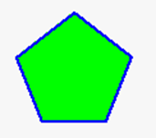

|
类型 |
绘图指令 |
|
描述 |
在指定区域画一个多边形 此指令支持设置线条宽度、线条类型和填充绘图，但不允许画出自定义控件之外。 此指令只能在自定义元件的绘图函数内使用。请查看自定义元件调用函数参考例程。 |
|
语法 |
DRAWEX_POLYGON2(points, tableindex [, iffill]) points：多边形点个数，决定后面有多少组xy数据（封闭图形起点和终点坐标需传两次，则总需传入点的坐标个数=多边形点个数+1） tableindex：存储起始点数据的table下标（x1,y1,..xn,yn） iffill：是否填充，缺省为0（不填充） 0 - 不填充，非0 - 填充 （注意：后绘制的可能会遮挡前绘制的图，因此选择填充时建议先画填充，后画边框）
特别说明： 若绘制封闭的多边形，如绘四边形需要传5个点，且起点=终点，反之则是普通的多线段（不能进行填充）。 若绘制的填充多边形不显示，请先检查是否是封闭图形。 多边形的边数是有限制的，当前版本最多支持32边形。 |
|
适用控制器 |
支持RTHmi（仅支持4系列及以上控制器） |
|
例子 |
SETEX_LINE(2,0) ‘设置线条宽度为2，实线类型 SET_COLOR(RGB(0,0,255),RGB(0,255,0)) ‘设置线条颜色和填充颜色 TABLE(0)=100 'x1 TABLE(1)=90 'y1 TABLE(2)=55 'x2 TABLE(3)=125 'y2 TABLE(4)=75 'x3 TABLE(5)=175 'y3 TABLE(6)=125 'x4 TABLE(7)=175 'y4 TABLE(8)=145 'x5 TABLE(9)=125 'y5 TABLE(10)=100 'x6 TABLE(11)=90 'y6 DRAWEX_POLYGON2(6,0,1) ‘绘制可填充的五边形 DRAWEX_POLYGON2(6,0) ‘绘制五边形边框  |
|
相关指令 |